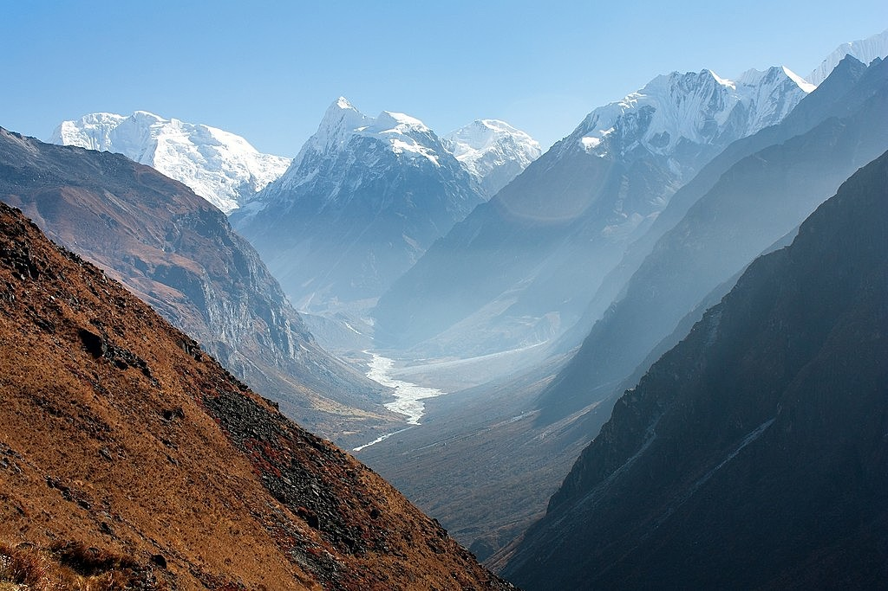

TOP DESTINATIONS
The Everest Base Camp trek on the south side is one of the most popular trekking routes in the Himalayas and is visited by thousands of trekkers each year. Trekkers usually fly from Kathmandu to Lukla to save time and energy before beginning the trek to this base camp. However, trekking to Lukla is possible. There are no roads from Kathmandu to Lukla and as a result, the only method of transporting large and heavy goods is by plane. In 2015, it was noted that about 40,000 people per year take the trek from the Lukla airport to the Nepal Everest Base Camp.Everest Base Trek Route Map from Nepal side From Lukla, climbers trek upward to the Sherpa capital of Namche Bazaar, 3,440 metres (11,290 ft), following the valley of the Dudh Kosi river. It takes about two days to reach the village, which is a central hub of the area. Typically at this point, climbers allow a day of rest for acclimatization. They then trek another two days to Dingboche, 4,260 metres (13,980 ft) before resting for another day for further acclimatization. Another two days takes them to Everest Base Camp via Gorakshep, the flat field below Kala Patthar, 5,545 metres (18,192 ft) and Mt. Pumori.
The Annapurna Circuit is one of the most popular treks the world. It follows a path that will take you from green pastures to leafy pine forests to arid landscapes and spectacular views of the Annapurna mountain range. The circuit trekking route is versatile and can be completed as a whole over 21 days or you can trek certain sections ranging from 3 days and up. Offering one of the most diverse and stimulating trekking routes anywhere in the world the Annapurna Circuit is great both for those seeking a challenge and for those looking for a trek that can be tailored to suit a shorter more leisurely pace.
The Dhaulagiri massif in Nepal extends 120 km (70 mi) from the Kaligandaki River west to the Bheri. This massif is bounded on the north and southwest by tributaries of the Bheri River and on the southeast by Myagdi Khola. Dhaulagiri I is the seventh highest mountain in the world at 8,167 metres (26,795 ft) above sea level, and the highest mountain within the borders of a single country (Nepal). It was first climbed on May 13, 1960 by a Swiss/Austrian/Nepali expedition. The mountain's name is dhaulāgirī in Nepali. This comes from Sanskrit where dhawala means dazzling, white, beautiful and giri means mountain. Dhaulagiri I is also the highest point of the Gandaki river basin. Annapurna I (8,091m/26,545 ft) is 34 km. east of Dhaulagiri I. The Kali Gandaki River flows between the two in the Kaligandaki Gorge, said to be the world's deepest. The town of Pokhara is south of the Annapurnas, an important regional center and the gateway for climbers and trekkers visiting both ranges as well as a tourist destination in its own right.
The region is a narrow valley located on the boarder of Tibet. This region is inhabited by Tibetans and Tamangs. The holy lake Gosaikunda, many Himalayan peaks like: Langtang-ri, Langtnag Lirung, Dorge Lhakpa Peak gives immense beauty to this region. Also the valley is famous for experiencing a different life style, customs, and tradition of Himalayan people. This region gives an opportunity to explore Lantang National Park, villages, climb small mountains and to visit glaciers. Area is famous for its natural beauty and wonderful climate with superb snow capped mountain views.
Quite famous trekking on mid-west of Nepal Manaslu had little bit more technical difficulty especially on crossing the pass, i.e. Larke La Pass. Starting from Arughat Gorkha trail pass through the high alpine area and eventually, enter on restrictedValley of Bimthang that had stretched up to Dharapani. Region gains elevation from Sama Gau with 3500 meters and slowly to thirty-seven meter at Samdo. Two successive rest day is normally allocated by most of the agencies so do we used to also allowing trekkers to explore Manaslu Base Camp and Tibetan Border Side. Manaslu Trek Difficulty is graded as strenuous grade trek with maximum elevation 5260 meters at the top of Larke Pass with some steep downhill terrain while descending the pass. Trail passes through lower elevation with terraced field and all the way through Budi Gandaki River. Manaslu Trek Difficulty is ok major things to be noticed are terrain that is open approach to Budi Gandaki River and Day on Larke Pass.
Tilicho lake trek is known for the world’s highest lake located in Manang District of Nepal in the Annapurna range at an altitude of 4919m. Among the different trek to Annapurna regions, Tilicho Lake trek is also famous for its religious point of view as many Hindu pilgrims from around the world visit this lake. The trek is undoubtedly providing some majestic panoramic view, great variety of culture and diversity, finest deep valleys and high mountains encircling the giant Annapurna Himal. The place is rich with the wide range of people and terrain, sub-tropical to high, dry landscape resembling the Tibetan Plateau. The trail leads you to the fine village inhabited by a wide diversity of people from different ethnic groups.
Upper Mustang which is frequently regulated by the government bodies is widely known for its scenic beauty and thrilling red mountains. Travelers enjoy by learning the ancient traditions, culture, and monasteries which are been still preserved. This remote traditional area is mainly influenced by Tibetan culture where most of the local people are friendly and kind-hearted. The gambas, ancient temples, the traditional way of living, playing children and stunning nature itself makes you realize to be in a virtual world. The rocky thrilling mountains, desert scenic environment, ancient heritages are one of the major features of this trek.